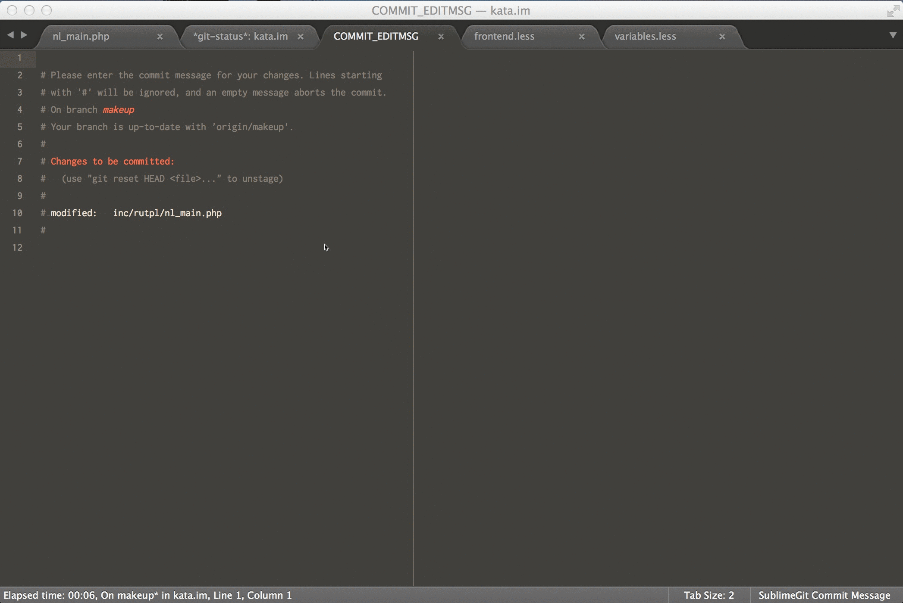

memTask
memTask will remember all time which you spent in Sublime Text 2 and Sublime Text 3. Also memTask will help you in time tracking for JIRA smart commits
Features

Insert time in any document

Installation
All what you need it's install plugin from Sublime Package Manager and work.
Support or Contact
Having trouble with memTask? Check out the documentation at https://github.com/max-mykhailenko/memTask and we’ll help you sort it out.